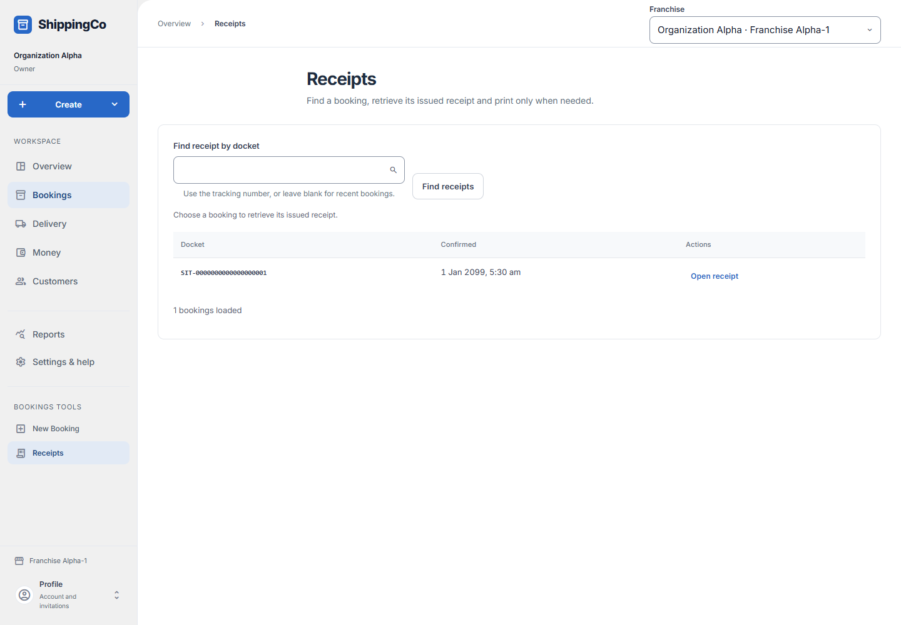
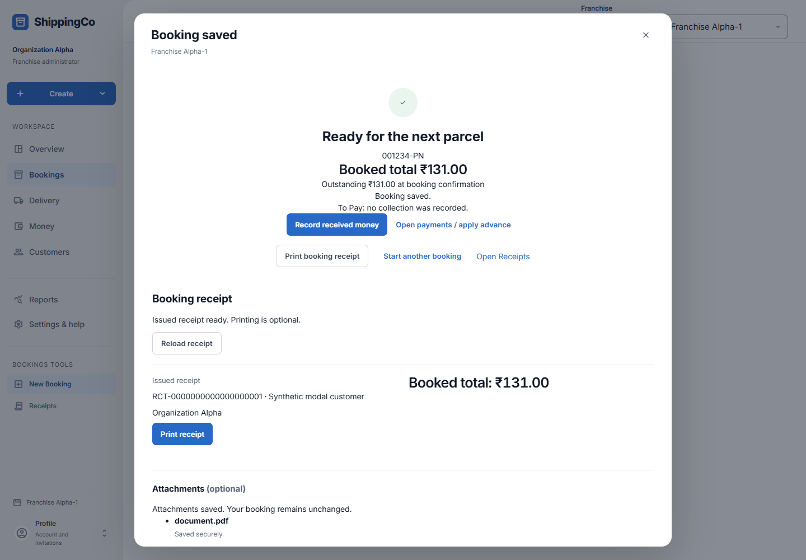
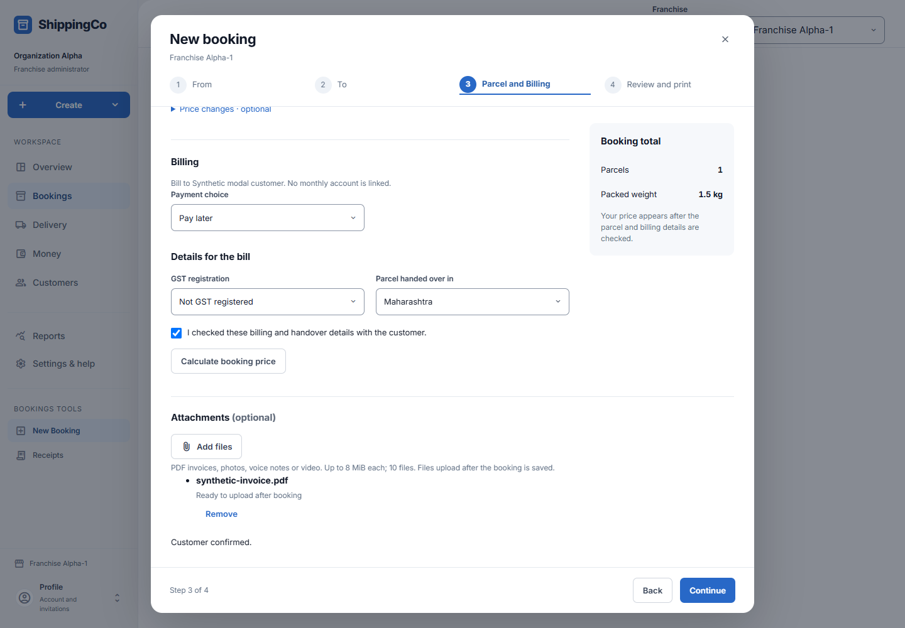

Booking receipts and files
Find an issued booking receipt, print it again, and check the files linked to a saved booking.
Screen 1 - Find the receipt
- Open Bookings, then Receipts, or choose Open Receipts after saving a booking.
- Search by the parcel’s tracking number when you need a particular booking.
- Check the matching customer, booking and date before opening a receipt.
- Use Load more if the required record is not on the current page.
- Opening a receipt does not create another booking or record a payment.

Screen 2 - Load and print
- Select Load receipt in the Booking receipt panel. The app fetches the issued receipt.
- Check the receipt number, customer, issuer and total shown.
- Select Print receipt to open the browser’s print dialog. Choose the printer, or Save as PDF if your browser offers it.
- Reload receipt fetches the same saved evidence again. Printing another copy does not change the amount.
- If loading fails, select Retry receipt. If the print dialog fails, try Print receipt again.
- A booking receipt shows the booking bill. A collection acknowledgement records an actual money collection. Do not use one as proof of the other.
- Use Back to receipts to return to the list, when that button is shown.

Screen 3 - Files selected during booking
- Files selected in Parcel and Billing upload only after the booking saves.
- Ready to upload after booking means the file is still waiting locally. Uploading means bytes are being sent. Checking file safety means validation is still running.
- Saved securely is the successful file result. A rejected file is not available for use.
- Needs attention means use the attachment retry. The saved booking remains; do not book the parcel again.
- For a rejected file, add a supported replacement through Attachments on the saved booking.
- Do not close the page or change branch before selected files have finished unless you accept losing files that remain only on the device.

Screen 4 - Add or read files on a saved record
- Open the saved booking or parcel’s Attachments area when that action is available to your role.
- Choose the correct file and purpose offered by the form. Shipment evidence supports the booking; parcel proof is tied to a parcel when that option is used.
- Wait for upload and safety checks to finish before expecting the file to open.
- Use the download or open action only for a ready, clean file. A pending or rejected file cannot be treated as available evidence.
- Supported files are PDF, JPEG, PNG, MP3, WAV and MP4. Files must be nonempty and at most 8 MiB each.
- The booking limit is 10 attachments and 32 MiB in total. A PDF must pass content checks; a renamed or unsuitable file may be rejected.
- Read any delete or cancel confirmation carefully. Removing evidence is separate from cancelling a booking.
- A file upload is not a delivery confirmation, payment verification or external e-way validation. Complete the relevant business action separately.